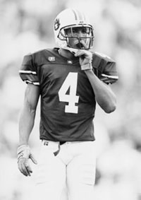

Senior ProfileReggie Worthy, Wide Receiver
Sometimes statistics do not tell the whole story. Sometimes it's what you don't see that is the heart of the story. Such is the case for senior wide receiver Reggie Worthy. Entering his final season with the Tigers, Worthy knows the lessons he has learned off the field will take him further in life than any accomplishments on the field. ccI'm going to graduate," Worthy said. "I am mature enough to realize that if I don't make it to the next level, I will be able to survive and get a job for myself. I know that it's time for me to start looking at what I want to do with my degree after I graduate." Worthy admits that he did not always put a high priority on his academics, which resulted in being forced to sit out the 1998 season. "That was a tough time for me. I let all of my priorities get out of whack during my sophomore year. But, I've learned that academics come first, then football," Worthy said. "When I was sent home I saw the same people and I was afraid of becoming nothing." Growing up in Attala, Ala., Worthy learned at an early age how to overcome tough obstacles. Neighborhood kids would take his toys and Worthy would be forced to fight to get them back. But, Worthy's mom was careful not to let her son become a neighborhood bully. "My mom was strict and taught me right from wrong," Worthy said. "She didn't allow me to get into trouble. She did a great job raising my brother and me." His brother Kevin, who will play football at the University of Iowa this fall, learned a great deal from his older brother Reggie. "When we were younger we would fight all of the time," Worthy said. "My brother and I are really close now. I guess that as we got older, we both played sports and had a lot more in common." Worthy's mother was not the only positive influence on his life. Worthy's high school coach Raymond Farmer tried to teach him valuable lessons. "In high school I was a better player than most of the other guys. I didn't have to work very hard," Worthy said. "My coach would tell me that I didn't have a very good work ethic and that in college guys like me would be a dime a dozen. "I didn't listen to what he was telling me then. Even after I started college I still didn't pay attention to what he told me. I didn't think he knew what he was talking about, but now I realize that he was right from the beginning." Worthy's teammate, roommate and close friend Ronney Daniels has noticed his maturity on and off the field. "He's a lot more focused this year," Daniels said. "Reggie has been working harder and he has set goals for himself." Worthy's hard work and dedication paid off in 1999 as he caught 23 passes for 270 yards. Through all of his struggles, Worthy has emerged as a team leader and one of the Tigers' top receivers for the 2000 season. "I try to do the little things," Worthy said. "I try to have good technique and be fundamentally sound. Hopefully the other guys will follow and can learn from my experiences here." For all of his hard work, Worthy has also managed to find time to relax and enjoy his time at Auburn. Worthy and Daniels have taken their competitive natures to the links.  "One day Reggie said that he could play golf and would probably beat me," Daniels said. "At first I beat him, but then he started practicing. He drives the ball really well, but my short game is better than his." With his final season upon him, Worthy looks forward to the challenges of taking the Tigers back to national prominence and of his life after football. "I've come a long way and learned a lot of lessons. I know that I'll be able to handle the challenges I'll face down the road because of what I've been through here," Worthy said. "And, hopefully, we'll be able to have a successful season and put Auburn back were it belongs."
Up Close With Reggie WorthyWhat's the single most valuable thing you've ever learned?"No matter what - don't give up."
If you could be on the cover of any magazine what would it be and what would the caption read?
What's your favorite cereal?
Who are three people you would invite to dinner? © 1999 Auburn Network, Inc. |